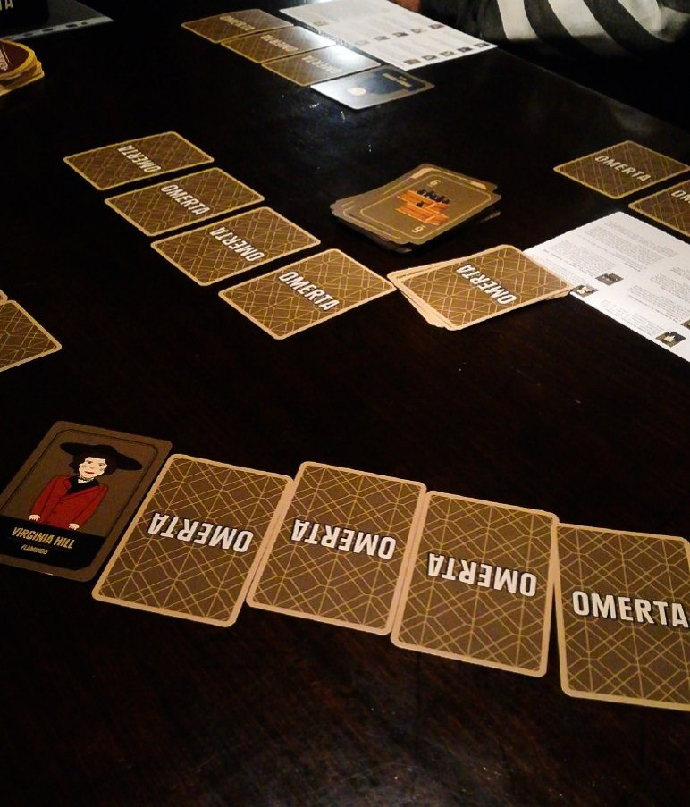

OMERTA

20/30 minuti 3-6 8+
Durante il proprio turno, si pesca 1 carta e si decide se sostituirla con una di quelle
ancora davanti a sè (a faccia in giù), oppure scartarla (a faccia in su). Se è una carta "bottiglie" allora gli
altri giocatori possono provare a scartarne una di uguale valore. Se è un personaggio, si attiverà l'abilità speciale.
Quando un giocatore ritiene di avere 7 o meno di fronte a sè, può chiamare Omertà. Si sommano i punteggi delle carte
di ciascuno e, se chiamata valida, lui farà 0. Altrimenti prende 20 di penalità. Dopo un numero di manche pari
ai giocatori, chi ha meno punti vince.
Il gioco parte dando 4 carte a ciascuno, ma permettendo di sbirciare solo dietro a 2 di esse.
Nei round successivi, quindi, starà al giocatore decidere se sostituire carte già note per abbassare il punteggio
(o attivare personaggi), oppure se iniziare a scoprire ciò che era ignoto.
Lentamente, si prenderà sempre più coscienza della propria somma e si potrà sempre più avere il controllo di
quel che accade.
C'è però la possibilità di azzardare nello scartare una carta. Alla peggio, la si riprende in mano con una carta
addizionale, ma conoscerete una carta in più. Alla meglio, avrete azzerato il punteggio di una carta scartandola.
RECENSIONE
Omerta è un gioco di memoria che richiede molta attenzione e concentrazione. I giocatori più avvantaggiati sono coloro che riescono a calcolare il punteggio delle carte senza la visione di esse. Inoltre è fondamentale tenere d’occhio la partita degli altri e saper usare tanta strategia.